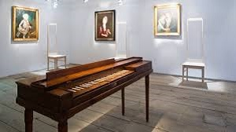
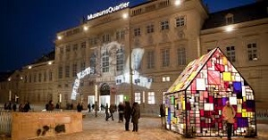
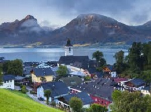
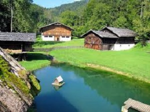

Juan Zapien's Dream Vacation to Austria
| |
destination |
description |
address |
|  |
Mozart's Geburtshaus (Salzburg) |
Music pilgrims flock to see the typical old burgher's house where Mozart was born. You can still see many of his childhood belongings, including a lock of his hair, his first viola, and a pair of keyboard instruments. Mozart's first violin is also displayed. Even at the age of 4, he was a musical genius. |
Getreidegasse 9, 5020 Salzburg, Austria |
|  |
MuseumsQuartier (Vienna) |
Vienna launched its new millennium with one of the major cultural centers to open in Middle Europe in some 2 decades. Architecturally stunning, this complex contains a treasure trove of art, being especially strong in modern works. The three major museums to visit here are Kunsthalle Wien, Leopold Museum, and MUMOK (Museum of Modern Art Ludwig Foundation). |
Museumsplatz 1, 1070 Wien, Austria |
|  |
St. Wolfgang (Upper Austria) |
On the Wolfgangsee, one of Austria's loveliest lakes, St. Wolfgang lies in the mountains of the Salzkammergut. It's the home of the White Horse Inn , which served as the setting for Ralph Benatzky's operetta of the same name. Lying 50km (32 miles) east of Salzburg, the resort is a summer paradise, with lakefront beaches and cafes, hiking opportunities in all directions, and skiing in winter. |
Markt 74, 5360 St. Wolfgang im Salzkammergut, Austria |
|  |
Osterreichisches Freilichtmuseum (Outside Graz) |
Just 16km (10 miles) from Graz, in a wooded valley, is one of Austria's great open-air museums. This museum of vernacular architecture, spread across 50 hectares (120 acres), features some 80 rural homes with ancillary buildings that have been reassembled. The site presents an excellent overview of the country's rural heritage, from a Carinthian farmstead to alpine houses from the Tyrol. |
Enzenbach 32, 8114 Stübing, Austria |